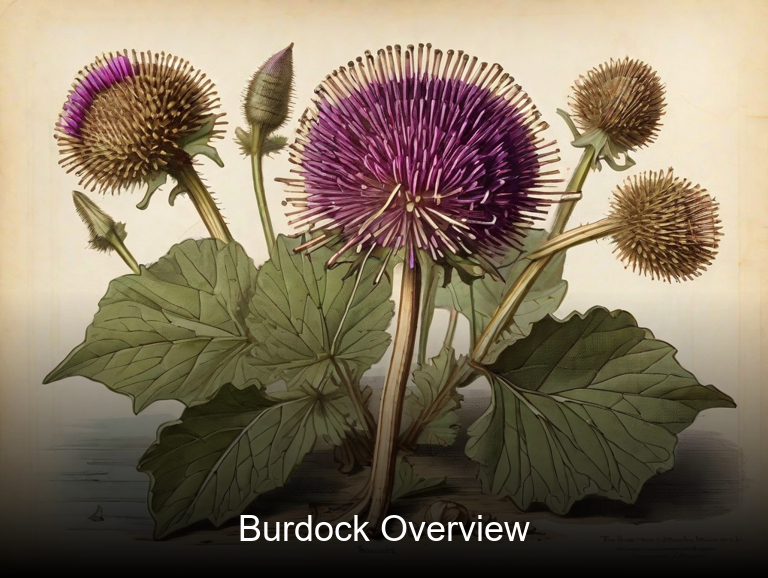
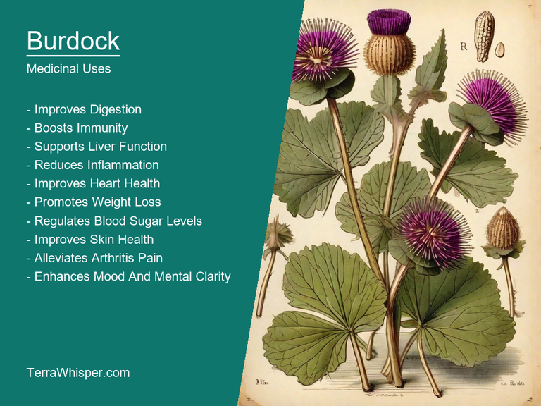
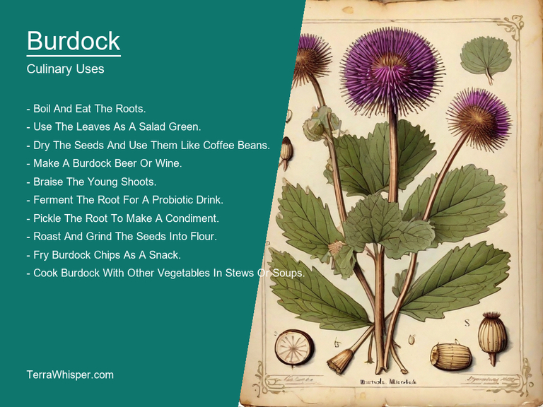
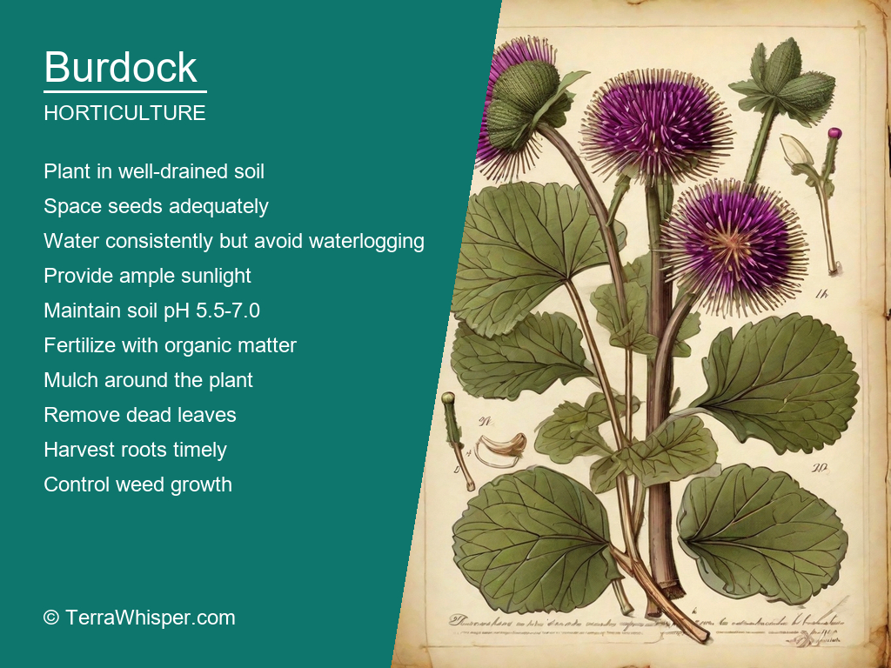
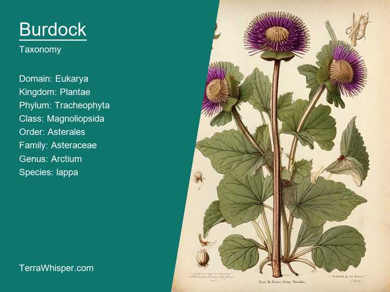
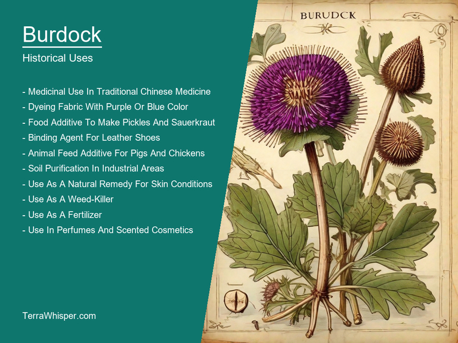

Burdock, scientifically known as Arctium lappa, is a beneficial medicinal and culinary plant. It has been used for centuries in traditional medicine to treat various ailments such as skin conditions, digestive issues, and liver problems. Its leaves and roots are edible, being rich in vitamins and minerals that can contribute to overall health. Moreover, the young shoots of burdock can be eaten like asparagus or cooked as a vegetable.
As a horticultural and ornamental plant, burdock brings visual appeal with its large purple flowers on tall stems. It is often grown in gardens for its beauty, particularly in areas where other plants may not thrive due to poor soil conditions. The attractive foliage of this plant makes it a good choice for landscaping purposes, adding texture and interest to garden borders. Additionally, the seeds of burdock have long been used to produce clothing material called "velvet from the seed".
This member of the Asteraceae family has a fascinating history. Native to Europe and Asia, it was introduced in North America where it naturalized in some areas. Its unique burr-like fruit structure allowed it to spread widely, becoming an invasive species in certain regions. In ancient Greece and Rome, burdock was used medicinally for various purposes such as treating gout, fever, and skin diseases. Today, it continues to be a popular plant for both its aesthetic appeal and practical uses.
In this article, you will discover what are the medicinal and culinary uses of burdock. Then, you'll learn how to cultivate it, what is its botanical profile, and how it was used historically.
Burdock (Arctium lappa) has many health benefits, such as its ability to detoxify the body, improve digestion, and aid in treating skin ailments like eczema and acne. This herbaceous plant is known for its medicinal properties and can be consumed through various preparations made from its roots, stems, and leaves, thus showcasing multiple applications in traditional medicine systems around the world.
The following illustration lists the most important uses of burdock in medicine.

Burdock contains numerous medicinal constituents like sesquiterpene lactones, flavonoids, sterols, polyacetylenes, and mucilage. These compounds work together to offer a wide range of therapeutic benefits when ingested or applied topically. One specific beneficial characteristic of burdock is its ability to promote the excretion of harmful substances such as free radicals and heavy metals from the body through urine, sweat, and stool. This detoxifying effect is a vital aspect in maintaining overall health.
The roots, leaves, and seeds of burdock are commonly used for various medicinal preparations. Roots are often used to create teas, extracts, or tinctures that can be consumed internally to address digestive issues, arthritis pain, and urinary tract infections. On the other hand, the leaves make up a significant part of burdock salads for promoting skin health, while seeds can serve as an alternative to sesame seeds due to their nutritional value. Burdock leaf tinctures are known for treating skin conditions such as eczema and acne by reducing inflammation and supporting the healing process.
The use of burdock may lead to some side effects, particularly in cases where an individual has allergies or sensitivities to other plants from the Asteraceae family, which includes ragweed, chamomile, daisies, marigolds, and sunflowers. Some people might experience mild gastrointestinal upset or dizziness when consuming burdock in high doses or over a long period of time.
To ensure safety and optimal outcomes when using burdock for medicinal purposes, precautions should be taken into consideration. Firstly, consult with a healthcare professional before incorporating burdock into your daily routine if you are already under medication, pregnant, breastfeeding, or have any existing health conditions. It's also crucial to select burdock products from reputable sources and follow the recommended dosage instructions to avoid potential side effects and obtain the best results for your well-being.
Burdock is a versatile ingredient with many culinary uses. It can be used in salads, soups, stews, stir-fries, and as a pickled vegetable. Its crunchy texture and slightly sweet flavor make it a popular choice for Japanese cuisine. For instance, it's often used to make katsu, tempura, and sushi rolls.
The following illustration lists the most common uses of burdock for culinary purposes.

The flavor profile of burdock is mildly sweet with a hint of nuttiness. When cooked, it releases a pleasant aroma that resembles roasted root vegetables. Depending on how it's prepared, it can range from mild to bold, making it a versatile ingredient in the kitchen.
The edible parts of burdock include the roots, leaves, and seeds. However, only the root is commonly consumed as a vegetable. It has a long, thin shape with a rough outer skin that must be peeled before cooking. Burdock also contains small, hard-shelled seeds that can be roasted as a snack or used in baking.
When preparing burdock for cooking, it's important to cut it into thin slices or strips to ensure even cooking. It's also a good idea to blanch it before boiling to prevent it from becoming mushy. Additionally, burdock can be marinated in vinegar and sugar before being pickled for a sweet and tangy flavor.
While burdock is generally safe to eat, it's important to avoid over-consumption as it may cause gastrointestinal upset. It's also high in oxalates, which can interfere with the absorption of calcium if consumed in excess. As always, moderation and common sense are key when incorporating new foods into your diet.
Burdock (Arctium lappa) is a hardy perennial herb that grows to a height of 1-2 meters. It has large, lobed leaves and produces small, white flowers on long stalks. Burdock can be grown from seed or by dividing the root system in late spring or early summer. To grow burdock, prepare the soil by adding compost or well-rotted manure. Plant the seeds 1-2 cm deep and spaced 30-45 cm apart. Thin the seedlings to 15-20 cm apart when they are 10-15 cm tall. Burdock prefers full sun but can tolerate partial shade. It requires well-drained soil with a pH of 6.0-7.5. Water burdock regularly during dry spells, especially in early spring and fall.
The following illustration lists the most important tips to cutlitvate burdock.

Burdock grows best in full sun with well-drained soil that is slightly acidic to neutral. It prefers moist, well-draining soil that is rich in organic matter. Burdock requires a lot of space, so it's important to plant it in an area where it can grow without interfering with other plants. Burdock also requires regular watering during dry spells, especially in early spring and fall. It's a good idea to fertilize burdock regularly to keep it healthy and productive. Use a balanced fertilizer formulated for perennials or add compost or well-rotted manure to the soil every 6-8 weeks.
Burdock requires minimal maintenance once established. It does not require pruning unless the roots are becoming too crowded, in which case they can be carefully separated and replanted. Burdock also does not require fertilizer during the growing season. However, it will benefit from regular watering during dry spells. In late summer or fall, cut back the stalks to the base of the plant to encourage new growth for the following year.
Burdock (Arctium lappa) belongs to the kingdom Plantae, phylum Tracheophyta, class Magnoliopsida, order Asterales, family Asteraceae, genus Arctium, and species lappa. It is commonly known as gobo, wild burdock, or wild gobe.
The following illustration display the botanical profile of burdock.

Burdock variants include gobo (Arctium edule), Chinese gobo (Arctium thalassioides), and Japanese gobo (Arctium imatum). Gobo is cultivated for its edible root, while Chinese and Japanese gobo are wild plants that are not typically consumed.
Burdock plants grow up to 1 meter tall and have large, lobed leaves with serrated margins. The flowers are bright yellow and form in clusters on a tall stem. The fruit is a burr, which contains the seeds, and can be used for food or as a natural remedy for skin conditions.
Burdock plants are native to Asia, specifically Japan, China, and Korea. They are found in wetlands, fields, and forests and thrive in cool, moist environments.
The life cycle of burdock begins with the seed, which germinates after a period of cold stratification. The plant grows rapidly and produces flowers within a few months. After pollination, the fruit forms on the stem and matures in about two months. The seeds are dispersed by wind and can germinate in new locations.
Burdock has a long history of medicinal use dating back to ancient times. It was used by traditional Chinese medicine and Indian Ayurveda for centuries. The root of the plant was believed to have anti-inflammatory properties, which made it useful in treating conditions such as arthritis, eczema, and acne. Burdock was also used to treat digestive issues, including bloating, gas, and constipation.
The following illustration lists the most well known historical uses of burdock.

In divination, burdock was considered a powerful tool for predicting the future. In medieval times, burdock seeds were often used to brew a tea that was believed to reveal hidden truths and secrets. The tea was typically brewed by boiling the seeds in water and then straining out the liquid. It was then consumed or poured into a pot or container to see what information it would reveal.
There are many legends surrounding burdock, particularly in Eastern cultures. In Chinese folklore, for example, burdock is said to have been created by a powerful monk who used his magic to bring forth the plant as a means of healing the sick and injured. In Japanese legend, burdock is associated with the god of rice, and it is believed that consuming burdock soup can help prevent hunger and ensure a bountiful harvest.